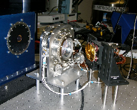
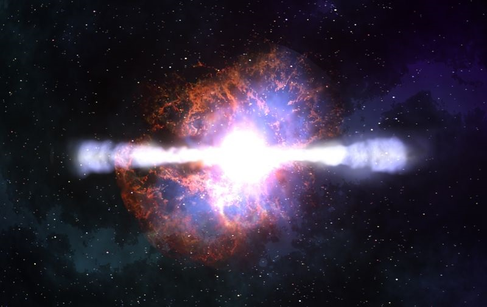
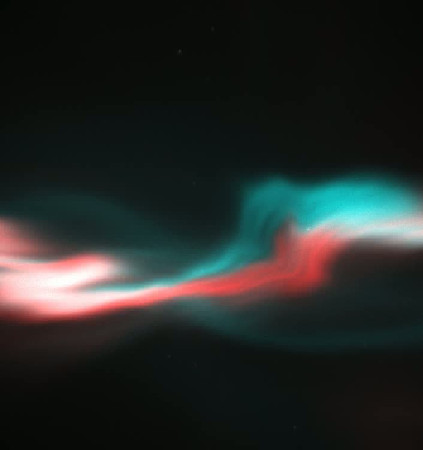
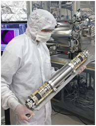
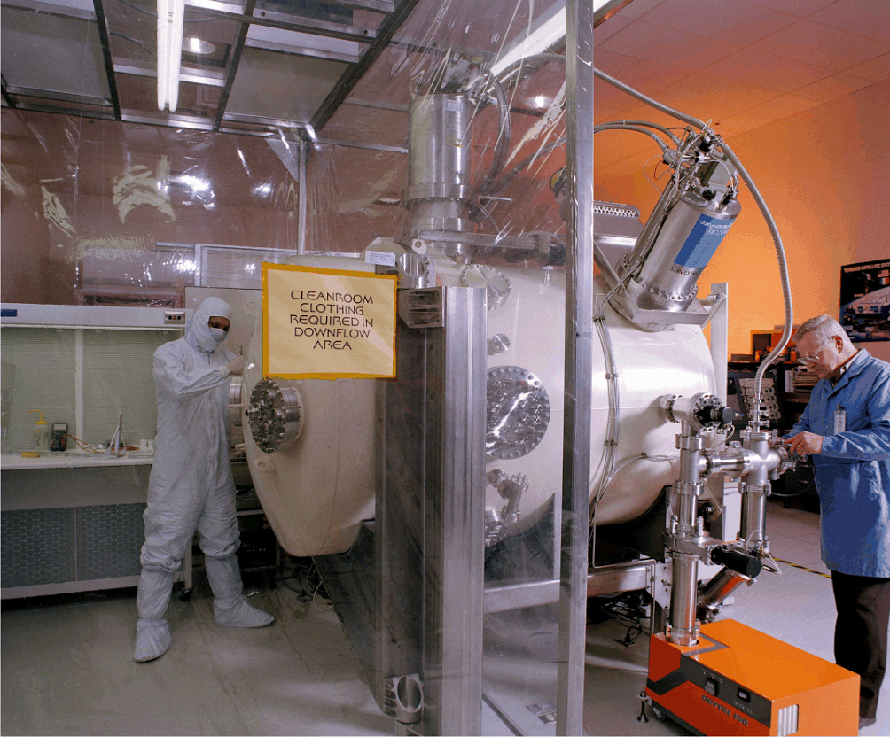
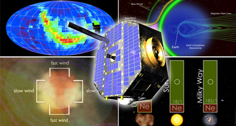
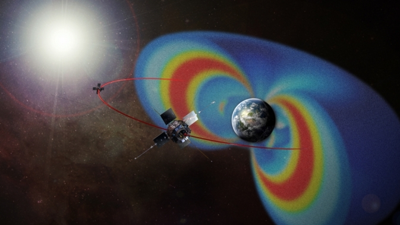

Research Groups (Alphabetically)
Astrophysics Instrumentation Group

The astrophysics (or photonics) instrumentation group
at SwRI is involved in detector and instrument development that
spans the IR to UV wavebands. Members of the group have been
Principal Investigators and Co-Investigators of instruments that
have flown on high altitude balloons, sounding rockets, and NASA
space missions, including the Swift Gamma-Ray Burst Mission.
Current research topics include: stabilized dispersive focal plane
systems for space platforms; UV detectors and telescopes for space
missions; instrumentation for the second generation Thirty Meter
Telescope Mid-IR instrument MICHI; and development of large format
superconducting detectors. The group has a new dedicated optics lab
for testing detectors and instruments.
Contact: Pete Roming
Phone: 210-522-3410
Astrophysics Research Group

The astrophysics group at SwRI is involved in observational,
experimental, and computational projects that are tied to the study
of the death of massive stars, specifically core-collapse
supernovae (SNe) and gamma-ray bursts (GRBs). Current research
topics include: bolometric properties of core-collapse SNe; X-ray,
UV, and optical flaring in GRBs; numerical simulations of the
transition region between Type IIb and Ib SNe; UV behavior of Type
IIn SNe and its implications for the ejected shell; and utilization
of SNe and GRBs as cosmological probes, particularly at high
redshift. Wavebands of study span from the near-IR to the X-ray,
with a core competency in the UV. The group primarily uses data
from the Swift satellite but also uses spectral and photometric
data from ground-based telescopes.
Contact: Pete Roming
Phone: 210-522-3410
Ionosphere Group

The ionospheric research group at SwRI is involved in both in-situ
and remote sensing techniques for investigating the physics of the
near-Earth plasma in the ionosphere and magnetosphere. Current
Research topics include: instrument development for sounding rocket
and satellite payloads, ground-based auroral imaging and
photometry, incoherent scatter radar observations from multiple
sites around the world, including Alaska, Canada, Greenland, and
Norway. Radar and optical observations of meteors are also used to
gain insight into the ionospheric and mesospheric processes
associated with meteor ablation and dust deposition. We have 5
high-resolution low-light-level imagers that are available for
these studies and further information about them can be found at
http://moose.space.swri.edu.
Contact: Marilia Samara
Phone: 210-522-6066
Mass Spectrometry Instrument Development and Applications

The Mass Spectrometry group is focused on the development and application of mass spectrometry for
novel space science applications, support of current missions and proposals for future opportunities.
Collectively we are part of the Center of Excellence in Analytical Mass Spectrometry (CEAMS) - a
multidisciplinary team that looks to capture all aspects of mass spectrometry (sample collection,
separation processes, ion optics, mass analyzer development, instrument electronics and data
analysis). Many of our projects are related to specific analytical challenges for deep space and outer
planet exploration; however we do support commercial and private projects that can benefit from
our technology development. Some of our notable NASA projects include Cassini, Rosina, Juno and
MASPEX. In addition, we have developmental projects in chromatography (GC and GC×GC) that tackle
the challenges associated with rover, outer planet, comet and icy moon landed missions.
Contact: Mark Libardoni
Phone: 210-522-2205
Particle/Space Physics

The Space Science group at SwRI has led and been on teams of a wide
range of space flight programs making measurements of the solar
wind, the Earth's magnetosphere, magnetospheres of other planets,
planetary atmospheres, comets and the heliosphere. The goal of this
group is to use measurements of the composition, spatial, and
energy distributions of charged and neutral particles to understand
the dynamics of the space environment. We work with mission and
instrument definition, design, manufacture, testing, operation and
the analysis of the data returned from these missions. This allows
UTSA Graduate students the opportunity to both work with the data
and the instrumentation in their studies. Some of the recent and
upcoming NASA and ESA missions we are involved with are MMS, TWINS,
New Horizons, Juno, Rosseta, Van Allen Probes (formally RBSP),
Cassini, and IBEX in addition to sounding rocket and cubesat
missions.
Contact: Phil Valek
Phone: 210-522-3385
Solar & Heliospheric Physics

The Solar & Heliospheric Group at SwRI/UTSA specializes in measurements of the
properties of space plasmas, and of suprathermal and energetic ions from a variety
of solar and interplanetary environments. The plasma, energetic particle, and neutral
atom observations require novel instrumentation on board Earth-orbiting satellites and
deep-space probes. These state-of-the-art instruments are designed and constructed
at SwRI's world-class laboratories by the group's technical and scientific
staff, with active participation from graduate students at UTSA. The group
also collaborates with other research teams across the United States and
Europe. Experiments built by the group are currently operating on many
spacecraft, including the Ulysses probe to the solar poles, and near-Earth missions including Wind, the Solar and Heliospheric
Observatory (SOHO), the Advanced Composition Explorer (ACE), and the 2-spacecraft
Solar-Terrestrial Relations Observatory (STEREO) mission. The SwRI group also serves
as the Principal Investigator for the Interstellar Boundary Explorer (IBEX) that was
launched in September 2008. IBEX images energetic neutral atoms from the solar wind
termination shock at the edge of the heliosphere and maps the global interaction
between the heliosphere and the local interstellar medium.
Contact: Mihir Desai
Phone: 210-522-6754
Space Weather

Researchers at SwRI are involved in studying all aspects of Space Weather, including the
origin of the primary drivers and understanding their causes and effects, as well as building
and designing instrumentation and analyzing science data from NASA missions such as ACE, Wind,
SoHO, IMAGE, TWINS, STEREO, and Van Allen Probes. SwRI's scientists are also involved in future
missions such as Magnetospheric Multiscale (MMS), Solar Orbiter, and Solar Probe Plus missions.
Contact: Mihir Desai
Phone: 210-522-6754